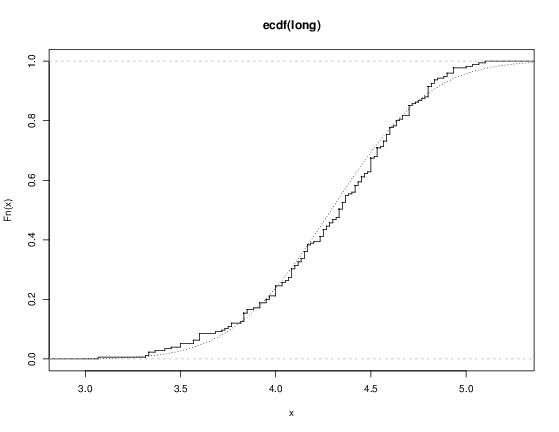

8 Probability distributions
8.1 R as a set of statistical tables
One convenient use of R is to provide a comprehensive set of statistical tables. Functions are provided to evaluate the cumulative distribution function P(X <= x), the probability density function and the quantile function (given q, the smallest x such that P(X <= x) > q), and to simulate from the distribution.
Distribution R name additional arguments beta betashape1, shape2, ncpbinomial binomsize, probCauchy cauchylocation, scalechi-squared chisqdf, ncpexponential exprateF fdf1, df2, ncpgamma gammashape, scalegeometric geomprobhypergeometric hyperm, n, klog-normal lnormmeanlog, sdloglogistic logislocation, scalenegative binomial nbinomsize, probnormal normmean, sdPoisson poislambdasigned rank signranknStudent’s t tdf, ncpuniform unifmin, maxWeibull weibullshape, scaleWilcoxon wilcoxm, n
Prefix the name given here by d for the density, p for the CDF, q for the quantile function and r for simulation (random deviates). The first argument is x for dxxx, q for pxxx, p for qxxx and n for rxxx (except for rhyper, rsignrank and rwilcox, for which it is nn). In not quite all cases is the non-centrality parameter ncp currently available: see the on-line help for details.
The pxxx and qxxx functions all have logical arguments lower.tail and log.p and the dxxx ones have log. This allows, e.g., getting the cumulative (or “integrated”) hazard function, H(t) = - log(1 - F(t)), by
- pxxx(t, ..., lower.tail = FALSE, log.p = TRUE)or more accurate log-likelihoods (by dxxx(..., log = TRUE)), directly.
In addition there are functions ptukey and qtukey for the distribution of the studentized range of samples from a normal distribution, and dmultinom and rmultinom for the multinomial distribution. Further distributions are available in contributed packages, notably SuppDists.
Here are some examples
> ## 2-tailed p-value for t distribution
> 2*pt(-2.43, df = 13)
> ## upper 1% point for an F(2, 7) distribution
> qf(0.01, 2, 7, lower.tail = FALSE)See the on-line help on RNG for how random-number generation is done in R.
8.2 Examining the distribution of a set of data
Given a (univariate) set of data we can examine its distribution in a large number of ways. The simplest is to examine the numbers. Two slightly different summaries are given by summary and fivenum and a display of the numbers by stem (a “stem and leaf” plot).
> attach(faithful)
> summary(eruptions)
Min. 1st Qu. Median Mean 3rd Qu. Max.
1.600 2.163 4.000 3.488 4.454 5.100
> fivenum(eruptions)
[1] 1.6000 2.1585 4.0000 4.4585 5.1000
> stem(eruptions)
The decimal point is 1 digit(s) to the left of the |
16 | 070355555588
18 | 000022233333335577777777888822335777888
20 | 00002223378800035778
22 | 0002335578023578
24 | 00228
26 | 23
28 | 080
30 | 7
32 | 2337
34 | 250077
36 | 0000823577
38 | 2333335582225577
40 | 0000003357788888002233555577778
42 | 03335555778800233333555577778
44 | 02222335557780000000023333357778888
46 | 0000233357700000023578
48 | 00000022335800333
50 | 0370A stem-and-leaf plot is like a histogram, and R has a function hist to plot histograms.
> hist(eruptions)
## make the bins smaller, make a plot of density
> hist(eruptions, seq(1.6, 5.2, 0.2), prob=TRUE)
> lines(density(eruptions, bw=0.1))
> rug(eruptions) # show the actual data pointsMore elegant density plots can be made by density, and we added a line produced by density in this example. The bandwidth bw was chosen by trial-and-error as the default gives too much smoothing (it usually does for “interesting” densities). (Better automated methods of bandwidth choice are available, and in this example bw = "SJ" gives a good result.)

We can plot the empirical cumulative distribution function by using the function ecdf.
> plot(ecdf(eruptions), do.points=FALSE, verticals=TRUE)This distribution is obviously far from any standard distribution. How about the right-hand mode, say eruptions of longer than 3 minutes? Let us fit a normal distribution and overlay the fitted CDF.
> long <- eruptions[eruptions > 3]
> plot(ecdf(long), do.points=FALSE, verticals=TRUE)
> x <- seq(3, 5.4, 0.01)
> lines(x, pnorm(x, mean=mean(long), sd=sqrt(var(long))), lty=3)
Quantile-quantile (Q-Q) plots can help us examine this more carefully.
par(pty="s") # arrange for a square figure region
qqnorm(long); qqline(long)which shows a reasonable fit but a shorter right tail than one would expect from a normal distribution. Let us compare this with some simulated data from a t distribution

x <- rt(250, df = 5)
qqnorm(x); qqline(x)which will usually (if it is a random sample) show longer tails than expected for a normal. We can make a Q-Q plot against the generating distribution by
qqplot(qt(ppoints(250), df = 5), x, xlab = "Q-Q plot for t dsn")
qqline(x)Finally, we might want a more formal test of agreement with normality (or not). R provides the Shapiro-Wilk test
> shapiro.test(long)
Shapiro-Wilk normality test
data: long
W = 0.9793, p-value = 0.01052and the Kolmogorov-Smirnov test
> ks.test(long, "pnorm", mean = mean(long), sd = sqrt(var(long)))
One-sample Kolmogorov-Smirnov test
data: long
D = 0.0661, p-value = 0.4284
alternative hypothesis: two.sided(Note that the distribution theory is not valid here as we have estimated the parameters of the normal distribution from the same sample.)
8.3 One- and two-sample tests
So far we have compared a single sample to a normal distribution. A much more common operation is to compare aspects of two samples. Note that in R, all “classical” tests including the ones used below are in package stats which is normally loaded.
Consider the following sets of data on the latent heat of the fusion of ice (cal/gm) from Rice (1995, p.490)
Method A: 79.98 80.04 80.02 80.04 80.03 80.03 80.04 79.97
80.05 80.03 80.02 80.00 80.02
Method B: 80.02 79.94 79.98 79.97 79.97 80.03 79.95 79.97Boxplots provide a simple graphical comparison of the two samples.
A <- scan()
79.98 80.04 80.02 80.04 80.03 80.03 80.04 79.97
80.05 80.03 80.02 80.00 80.02
B <- scan()
80.02 79.94 79.98 79.97 79.97 80.03 79.95 79.97
boxplot(A, B)which indicates that the first group tends to give higher results than the second.

To test for the equality of the means of the two examples, we can use an unpaired t-test by
> t.test(A, B)
Welch Two Sample t-test
data: A and B
t = 3.2499, df = 12.027, p-value = 0.00694
alternative hypothesis: true difference in means is not equal to 0
95 percent confidence interval:
0.01385526 0.07018320
sample estimates:
mean of x mean of y
80.02077 79.97875which does indicate a significant difference, assuming normality. By default the R function does not assume equality of variances in the two samples. We can use the F test to test for equality in the variances, provided that the two samples are from normal populations.
> var.test(A, B)
F test to compare two variances
data: A and B
F = 0.5837, num df = 12, denom df = 7, p-value = 0.3938
alternative hypothesis: true ratio of variances is not equal to 1
95 percent confidence interval:
0.1251097 2.1052687
sample estimates:
ratio of variances
0.5837405which shows no evidence of a significant difference, and so we can use the classical t-test that assumes equality of the variances.
> t.test(A, B, var.equal=TRUE)
Two Sample t-test
data: A and B
t = 3.4722, df = 19, p-value = 0.002551
alternative hypothesis: true difference in means is not equal to 0
95 percent confidence interval:
0.01669058 0.06734788
sample estimates:
mean of x mean of y
80.02077 79.97875All these tests assume normality of the two samples. The two-sample Wilcoxon (or Mann-Whitney) test only assumes a common continuous distribution under the null hypothesis.
> wilcox.test(A, B)
Wilcoxon rank sum test with continuity correction
data: A and B
W = 89, p-value = 0.007497
alternative hypothesis: true location shift is not equal to 0
Warning message:
Cannot compute exact p-value with ties in: wilcox.test(A, B)Note the warning: there are several ties in each sample, which suggests strongly that these data are from a discrete distribution (probably due to rounding).
There are several ways to compare graphically the two samples. We have already seen a pair of boxplots. The following
> plot(ecdf(A), do.points=FALSE, verticals=TRUE, xlim=range(A, B))
> plot(ecdf(B), do.points=FALSE, verticals=TRUE, add=TRUE)will show the two empirical CDFs, and qqplot will perform a Q-Q plot of the two samples. The Kolmogorov-Smirnov test is of the maximal vertical distance between the two ecdf’s, assuming a common continuous distribution:
> ks.test(A, B)
Two-sample Kolmogorov-Smirnov test
data: A and B
D = 0.5962, p-value = 0.05919
alternative hypothesis: two-sided
Warning message:
cannot compute correct p-values with ties in: ks.test(A, B)